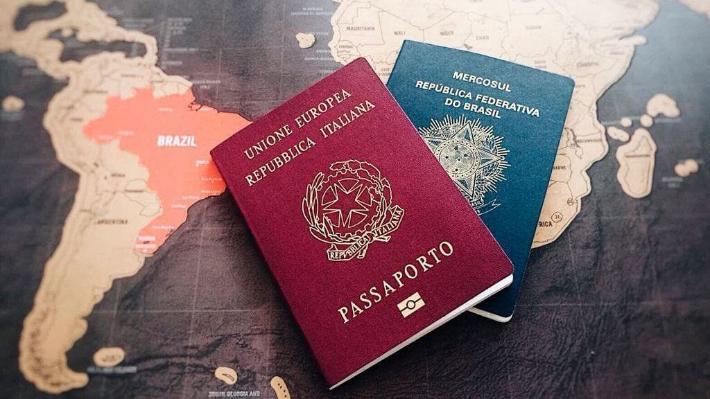

Conquiste a dupla cidadania
Por Manuela Ciconetto Bernardi e Caio Vinícius Torques
Especialistas em pesquisa e busca de documentos

O que nós fazemos por você?
- Localizamos qual ramo você pode fazer o processo de dupla cidadania;
- Buscamos pelo local de origem do imigrante;
- Fazemos emissão dos documentos, em inteiro teor e apostilado.
Contato
Quem somos